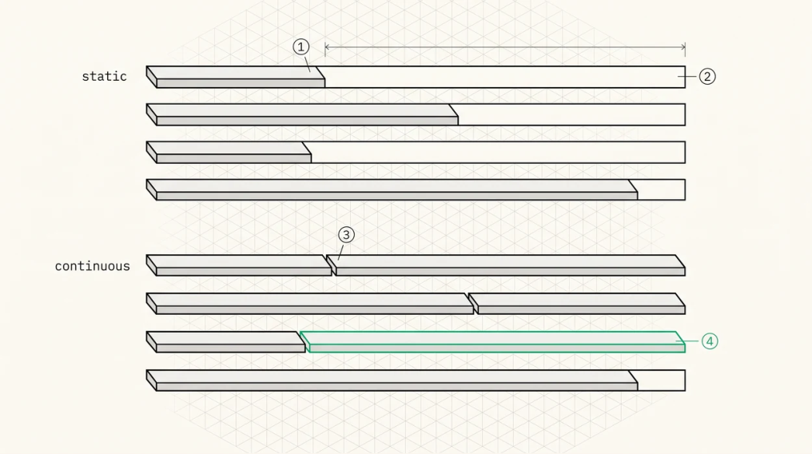

Continuous Batching
Static batching, and why it wastes so much
In static batching, requests get grouped when they arrive and the batch runs to completion before anyone new can join. Start four requests, watch three of them finish quickly while the fourth generates a long answer, and three of your four slots sit idle until it’s done.
On a workload with realistic variance in output length, and every real workload has that, the idle fraction is enormous. You’re paying for a GPU and using a fraction of it for reasons that have nothing to do with hardware.
Continuous batching, also called iteration-level or in-flight batching, lets requests join and leave at any decode step. A finished request frees its slot immediately, so the engine never runs a half-empty batch while work waits in the queue.

O
1Static batching groups requests at arrival and runs the batch to completion. Three of these four finish early.O
2Their slots stay empty until the longest request in the batch is done. On any workload with realistic variance in output length, that dead area is most of what you are paying for.O
3Continuous batching makes the scheduling unit one decode step, so a finished request frees its slot immediately.O
4A new request joins mid-flight. It needs KV blocks from a shared pool right now, which is exactly why continuous batching requires paged KV rather than merely benefiting from it.
Orca and iteration-level scheduling
The foundational paper is Orca (Yu et al., OSDI 2022), which made the scheduling unit one decode step rather than one request. Orca also introduced selective batching , batching the operations that can be
batched across requests of differing lengths, which is the linear layers where tokens are independent rows, while handling attention per sequence because each sequence attends to a different history. That split is still exactly how every engine works today.
Here’s the loop, in the form all of them implement.
loop {
// 1. Reclaim
for req in finished { free_kv_blocks(req); notify_client(req); }
// 2. Admit — as many queued requests as the KV budget allows
while let Some(req) = queue.peek() {
if !can_allocate(req) { break; }
admit(req);
}
// 3. Preempt if the running set no longer fits
while !fits_in_budget(running) {
let victim = choose_victim(running);
evict(victim); // recompute or swap
}
// 4. Build the step: decode tokens for all running requests,
// plus one prefill chunk if the token budget allows
let batch = build_batch(running, token_budget);
// 5. Execute one forward pass
let logits = model.forward(batch);
// 6. Sample, append to KV, check stop conditions
let tokens = sampler.sample(logits, batch.params);
for (req, tok) in zip(batch.reqs, tokens) {
req.append(tok);
if req.is_finished() { finished.push(req); }
else { stream_to_client(req, tok); }
}
}Everything in the rest of Part IV, and a fair amount of Part IX, is a refinement of one of those six steps.
Why this needs paged KV
The dependency is structural rather than convenient. A joining request needs KV blocks for its prompt right now, out of a pool shared with everyone else. A finishing request has to return its blocks immediately rather than when the batch drains. And the attention kernel has to handle a batch where one sequence sits at token 10 and another at token 900,000, following each sequence’s own block table.
Without paging you’d pre-allocate a contiguous maximum-length buffer per slot, which caps concurrency at VRAM divided by maximum length regardless of what anyone actually uses. Paging is what makes concurrency depend on real demand.
Batched attention
The batched decode kernel handles every running sequence in one launch, and each sequence brings one query vector per query head, its own block table, its own sequence length, and, with quantisation, its own scale metadata. The kernel parallelises over sequences, KV heads, and KV splits.
Two details decide whether it performs.
Ragged batching. Sequence lengths differ by orders of magnitude, so padding to the maximum wastes almost all the work. The standard representation is a cumulative-sequence-length array, the varlen or ragged layout, plus a flattened token dimension, so the kernel indexes directly into each sequence’s data with no padding at all.
Split budget across sequences. Chapter 10’s split count was derived for one sequence filling the GPU, but with B sequences the total workgroup budget is shared, so splits per sequence should fall as batch size rises. Engines compute this from a target number of total resident workgroups rather than from persequence heuristics, because a fixed split count that’s right at batch 1 is badly wrong at batch 64.
Prefill and decode in the same loop
Both phases share the loop, and the scheduler decides each iteration whether to spend its budget on decode, one token per running sequence, or on prefill, many tokens for a new one, or on both.
vLLM used to alternate, with prefill-only and decode-only iterations, which produced the interference pattern Chapter 18 describes and got replaced by chunked prefill, now the default. Every iteration runs decode for all running sequences plus as many prefill tokens as the budget allows. SGLang interleaves similarly while exploiting radix-tree prefix sharing so that prefill work often gets skipped entirely.
The unifying abstraction is a token budget per iteration, max_num_batched_tokens . Each running sequence contributes one token, prefill contributes the remainder, and the budget is sized so the iteration takes a predictable amount of time. Predictable iteration time is what makes inter-token latency predictable, and inter-token latency is what users perceive.
The throughput and latency trade
Bigger batches raise throughput, because the weight and KV reads amortise across more tokens, and raise per-token latency, because each step does more work. Smaller batches do the reverse. So far, so obvious.
The shape of the curve is the part worth internalising. At batch 1 decode is entirely bandwidth-bound on weights, so doubling the batch nearly doubles throughput at nearly no latency cost, since the same weights get read once for two tokens. That continues until the weight read is amortised and either attention, which scales with batch times context, or raw compute becomes the bottleneck, after which throughput gains flatten and latency rises roughly linearly.
Which gives you a practical rule. Increase batch size until you’re no longer weight-bandwidth-bound, then stop when the latency SLO binds. Where that point sits depends on model size, context length, and quantisation, so it has to be measured per deployment rather than configured from a default.
Key Concept
Continuous batching converts GPU idle time into throughput by letting requests join and leave at every decode step. It requires paged KV for dynamic block allocation, a scheduler to decide which requests advance, and ragged batched attention to handle per-sequence lengths and block tables in one kernel. The per-iteration token budget is the control knob that makes inter-token latency predictable, and batch size trades latency for throughput along a curve that’s nearly free at first, while decode is weightbandwidth-bound, and expensive afterwards.
Exercises
A dense 94-layer model in FP8 has 120 GB of weights. At 5,800 GB/s, how long does one decode step take if it’s purely weight-bandwidth-bound? Now give each sequence an 8K-token KV cache with 4 KV heads of dimension 128 in FP8, and find the batch size at which total attention reads match the weight read.
Explain why padding a ragged batch to the maximum sequence length is worse than it first appears, using a workload with lengths distributed log-uniformly between 100 and 100,000.
Build: write a simulator for the loop above with synthetic requests (arrival process, prompt lengths, output lengths). Measure throughput and P99 inter-token latency against batch cap and reproduce the shape of the trade-off curve.